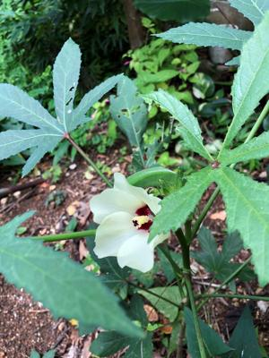
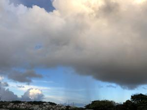
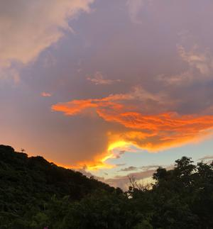

うるがいの話 ある日
最新: 医大生うるがいとは 前提知識です
カニの画像をクリックすると『うるがいの話』サイトを表示します|
|
うるがい(ｳﾙｶﾞｲ urugai)とは、『もずくがに』の名前でとても大きくなります。 |
|---|---|
|
|
たながー（ﾀﾅｶﾞｰtanagaa）とは手長えびのことで、何種類かあり大きいのは車 エビぐらいになります。 |

|
ぶながー(bunagaa)とは、赤い髪の毛、赤い身体、そして身長は１ｍ２０ｃｍ ぐらい、川の蟹を食べているの目撃された。場所は沖縄県国頭郡大宜味村のと ある村僕の隣近所に住んでいる爺さんから、聞いた話です。 |
2021年09月26日 (日）医大生
16:38
  
Amazonプライムで【宮廷女官 チャングムの誓い】全５４話を見終える。
朝ドラ「おかえりモネ」では、モネの相手役に医者が出ているが、気仙沼の家
族は、ドラマに出てくるものの医者の家族は出てこない。ん！、そいえば末っ
子の妹の彼氏が、まだ医大生だった頃、北海道の高橋家の両親が、恩納村にあ
るかりゆしビーチリゾートホテルで内の家族と会いたいと、希望しているとこ
と。妹から、私とヨメが代表で会ってくれと頼まれたので、とある夏に会いに
行ったことがあった。結局妹は、その医大生とは結婚は出来なかったが私は彼
氏と面識がない！。ところがだ、まだアパートに住んでいた時で、このアパー
トの一階にはクリーニング店があり、そこの息子の家庭教師を医大生がしてい
た。クリーニング屋のオバさんは、彼から私たちの事を聞いていたようだ。
もう、三十数年も前のことである。そうそう、下の妹が、神奈川県で結婚した
相手も高橋さんだった。